a)
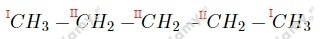
b)
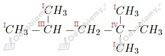
Wzory sumaryczne alkenów to:
Izomerami pentenu są:
a) 2-metylobut-1-en
c) 3-metylobut-1-en
Wzór:
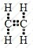
Liczba elektronów tworzących wiązania - 12
Liczba wiązań typu σ - 5
Liczba wiązań typu 𝜋 - 1
a)
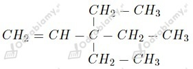
b)
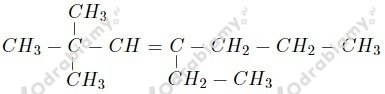
c)
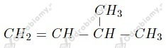
d)
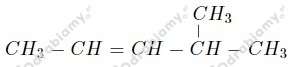
e)
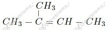
f)
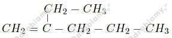
g)
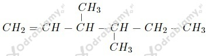
h)
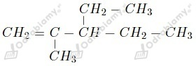
i)
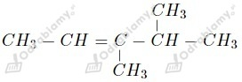
a) but-1-en
b) but-2-en
c) 3-metylopent-2-en
d) 3,3-dimetylobut-1-en
e) 2,3-dimetylopent-2-en
f) 3-etylo-4-metyloheks-3-en (wyjaśnienie: dla podstawników znajdujących się przy równoważnych atomach węgla, niższą numerację dostaje ten atom węgla, przy którym jest podstawnik wcześniejszy alfabetycznie. Niepoprawna byłaby zatem nazwa 4-etylo-3-metyloheks-3-en)
g) 2,3-dimetylopent-1-en
h) 2,3-dimetylobut-1-en
Wzór tego alkenu możemy zapisać jako CxHy. Zaczynamy od obliczenia zawartości procentowej wodoru:
Masa atomowa węgla to 12 u zaś wodoru 1 u. Liczymy wartości indeksów x oraz y.
Wzór rzeczywisty tego związku to
a)
b)
c)
d)